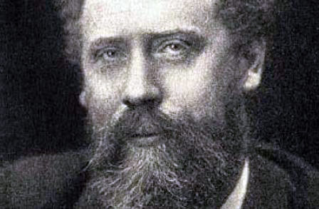

William Ernest Henley was born in Gloucester, England, and was educated at Crypt Grammar School and the University of St. Andrews. While in grammar school, Henley studied with fellow poet T.E. Brown. Henley's father was a struggling bookseller who died when Henley was a teenager. Tragedy struck Henley at the age of 12 when he was diagnosed with tubercular arthritis and had to have one of his legs amputated just below the knee. His other foot was saved through a radical surgery. Henley began writing poems while healing in the infirmary, which is where he wrote "Invictus". His oeuvre of poetry often revolves around themes of inner strength and perserverence. Henley was an editor for the Scots Observer, and his friendships included Rudyard Kipling and Robert Louis Stevenson, who reportedly based his Long John Silver character in Treasure Island in part on Henley.
